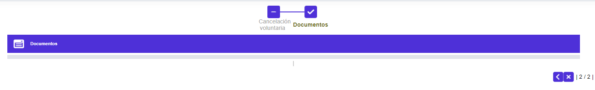
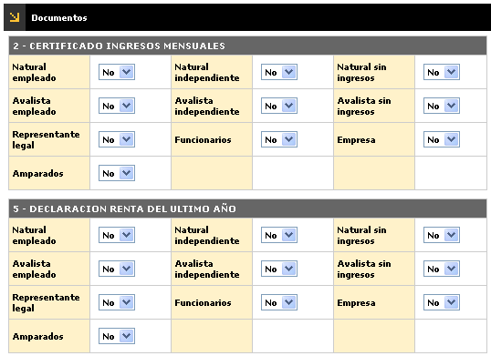

Cancelación voluntaria del crédito
Documentos: En este paso del wizard se muetra la relación de los diferentes documentos que deben anexarse a la solicitud, permitiendo marcar en las columnas correspondientes si cada documento relacionado fue entregado o no.
En caso de no haber documentos parametrizados para el producto de la tarjeta, este formulario se mostrará en blanco.


A través de los botones de la parte inferior derecha, se podrá regresar o cancelar el proceso.